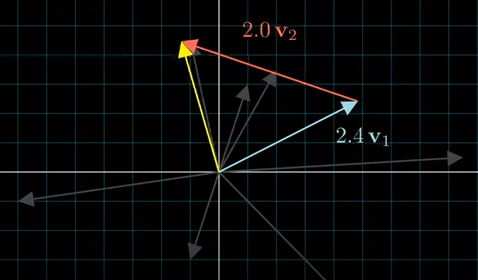

Basics (3) - Special Matrices
template
template
0.0.1 Linear Transformation
A function is said to be linear if it satisfies two properties: additivity and homogeneity.
- Additivity means that for any two inputs, the output of the function applied to their sum is equal to the sum of the outputs applied to each input separately. In other words, if we have a function \(f\) and vectors \(\mathbf x\) and \(\mathbf y\), then
\[ f(\mathbf x + \mathbf y) = f(\mathbf x) + f(\mathbf y) \]
- Homogeneity means that for any input and scalar \(c\), the output of the function applied to the input scaled by \(c\) is equal to the output applied to the unscaled input multiplied by \(c\). In other words,
\[ f(c\mathbf x) = c f(\mathbf x) \] These two properties together are what we mean when we say a function is linear.
Try to compare \(y=2x\) for liniearity vs \(y=2x^2\) for non-linearity and which one satisfies the linear properties?
:::
Let’s consider the standard inner product of two vectors in \(\mathbb R^2\), given by \(\langle \mathbf x, \mathbf y\rangle\) = \(x_1y_1 + x_2y_2\), where \(\mathbf x = [x_1, x_2]^T\) and \(\mathbf y = [y_1, y_2]^T\).
- Linearity in the first argument:
\[ \langle 2 \mathbf x + 3\mathbf y, \mathbf z\rangle = (2x_1 + 3y_1)z_1 + (2x_2 + 3y_2)z_2 = 2\langle \mathbf x, \mathbf z \rangle + 3\langle \mathbf y, \mathbf z \rangle \]
- Conjugate linearity in the second argument:
\[ \langle \mathbf x, 2\mathbf y+3\mathbf z\rangle = x_1(2y_1 + 3z_1) + x_2(2y_2 + 3z_2) = 2\langle \mathbf x, \mathbf y \rangle + 3\langle \mathbf x, \mathbf z \rangle \]
- Symmetry:
\[ \langle \mathbf x,\mathbf y\rangle = x_1y_1 + x_2y_2 = y_1x_1 + y_2x_2 = \langle \mathbf y, \mathbf x \rangle \]
- Positive-definite:
\[ \langle \mathbf x,\mathbf x\rangle = x_1^2 + x_2^2 \ge 0 = \langle \mathbf x, \mathbf x \rangle \text{ only if } \mathbf x = [0, 0]^T \]
Let’s see another example of two complex vectors for 2. Conjugate linearity in the second argument, \(\mathbf{u}=\begin{bmatrix} 1+i \\ 2 \end{bmatrix}\) and \(\mathbf{v}=\begin{bmatrix} 3-2i \\ 1 \end{bmatrix}\).
Their inner product would be: \[ \begin{aligned} \langle \mathbf{u}, \mathbf{v} \rangle &= \begin{bmatrix} 1+i \\ 2 \end{bmatrix}^H \begin{bmatrix} 3-2i \\ 1 \end{bmatrix} \\ &= \begin{bmatrix} 1-i & 2 \end{bmatrix} \begin{bmatrix} 3-2i \\ 1 \end{bmatrix} \\ &= (1-i)(3-2i) + 2(1) \\ &= 1 + i + 6 - 4i + 2 \\ &= 9 - 3i. \end{aligned} \]
where \(H\) is the Hermitian transpose, also known as the conjugate transpose, which is similar to the transpose operation, but also involves taking the complex conjugate of each element. For a matrix \(\mathbf A\), the Hermitian transpose is denoted by \(\mathbf A^H\) or \(A^\dagger\) and is defined as the transpose of the complex conjugate of \(\mathbf A\). Mathematically, for a matrix \(\mathbf A\) with elements \(a_{i,j}\), the Hermitian transpose \(\mathbf A^H\) is defined as:
\[ (\mathbf A^H)_{i,j} = \overline{a_{j,i}} \]
where \(\overline{a_{j,i}}\) denotes the complex conjugate of \(a_{j,i}\).
In the case of a real-valued matrix, the Hermitian transpose reduces to the ordinary transpose, denoted by \(\mathbf A^T\).
Now let’s see the conjugate linearity property in the second argument:
\[ \begin{aligned} \langle \mathbf{u}, c \mathbf{v} \rangle &= \begin{bmatrix} 1+i \\2 \end{bmatrix}^H \left(c \begin{bmatrix} 3-2i \\ 1 \end{bmatrix}\right) \\ &= \begin{bmatrix} 1-i & 2 \end{bmatrix} \begin{bmatrix} 3c-2ci \\ c \end{bmatrix} \\ &= (1-i)(3c-2ci) + 2(c) \\ &= 3c - 2ci + 2c - 2ci \\ &= (3+2)c - 4ci \\ &= c(3+2i) - 4i\overline{c}. \end{aligned} \]
We can see that the second component of the result is \(-4i\overline{c}\), which is the conjugate of \(4ic\). Therefore, we can say that the inner product is conjugate linear in the second argument.
A dot product is a specific type of inner product that is defined for Euclidean spaces, which are spaces with a notion of distance or length. The dot product of two vectors is defined as the sum of the products of their corresponding components. In other words, if \(\mathbf a = [a_1, a_2, ..., a_n]\) and \(\mathbf b = [b_1, b_2, ..., b_n]\) are two vectors in \(\mathbb R^n\), then their dot product is given by:
\[ \mathbf a \cdot \mathbf b = a_1b_1 + a_2b_2 + ... + a_nb_n \]
The dot product satisfies some of the properties of an inner product, such as being linear in the first argument and symmetric. However, it is not conjugate linear in the second argument, and it is not positive-definite in general.
So, while a dot product is a specific type of inner product, not all inner products are dot products. :::
For example, if \(\textbf{a} = [1, 2, 3]\) and \(\textbf{b} = [4, 5, 6]\), then their dot product \(c = 1\cdot 4 + 2\cdot 5 + 3\cdot 6 = 32\).
0.1 Cross Product of Vectors
The cross product of two vectors is a vector that is perpendicular to both of them. If \(\textbf{a}\) and \(\textbf{b}\) are two vectors in \(\mathbb{R}^3\), then their cross product \(\textbf{c} = \textbf{a} \times \textbf{b}\) is a vector given by the formula
\[ \textbf{c} = \textbf{a} \times \textbf{b} \\ = ||\textbf{a}|| ||\textbf{b}||\sin(\theta) \mathbf n \]
where:
- \(\theta\) is the angle between \(\textbf{a}\) and \(\textbf{b}\) in the plane containing them (hence, it \(0 \le \theta \le \pi\))
- \(||\textbf{a}||\) and \(||\textbf{b}||\) are the magnitudes of vectors \(||\textbf{a}||\) and \(||\textbf{b}||\)
- and \(||\textbf{n}||\) is a unit vector perpendicular to the plane containing \(||\textbf{a}||\) and \(||\textbf{a}||\), with direction such that the ordered set (\(||\textbf{a}||\), \(||\textbf{b}||\), \(||\textbf{n}||\)) is positively-oriented.
If the vectors \(\textbf{a}\) and \(\textbf{b}\) are parallel (that is, \(\theta\) between them is either \(0\) or \(\pi\)), by the above formula, the cross product of \(\textbf{a}\) and \(\textbf{b}\) is the zero vector 0.
Reference: read the explanations in wiki

For example, \[ \textbf{c} = \textbf{a} \times \textbf{b} = [a_2b_3 - a_3b_2, a_3b_1 - a_1b_3, a_1b_2 - a_2b_1] \]
If \(\textbf{a} = [1, 2, 3]\) and \(\textbf{b} = [4, 5, 6]\), then their cross product \(\textbf{c} = [-3, 6, -3]\).
0.2 Column Vector & Row Vector
A column vector \(\mathbf{u}\) with \(n\) elements is an \(m \times 1\) matrix, which can be represented as: \[ \mathbf{u} = \begin{bmatrix} u_{1} \\ u_{2} \\ \vdots \\ u_{m} \end{bmatrix} \]
In an \(m \times n\) matrix, the column vectors can be represented as:
\[ \mathbf U = \begin{bmatrix} \mathbf u_{1} &\mathbf u_{2} & \dots &\mathbf u_{n} \end{bmatrix} \\ = \begin{bmatrix} u_{11} & u_{12} & \cdots & u_{1n} \\ u_{21} & u_{22} & \cdots & u_{2n} \\ \vdots & \vdots & \ddots & \vdots \\ u_{m1} & u_{m2} & \cdots & u_{mn} \end{bmatrix} \]
where \(u_i\) is the \(i\)-th element of the column vector \(\mathbf{u}\), \(n\) is the number of columns, and \(m\) is the number of rows in the matrices.
A row vector \(\mathbf{u}\) with \(m\) elements is a \(1 \times n\) matrix, which can be represented as: \[ \mathbf{u} = \begin{bmatrix} u_{1} & u_{2} & \cdots & u_{m} \end{bmatrix} \]
In an \(m \times n\) matrix, the row vectors can be represented as:
\[ \mathbf U = \begin{bmatrix} \mathbf u_{1} \\\mathbf u_{2} \\ \vdots \\\mathbf u_{m} \end{bmatrix} \\ = \begin{bmatrix} u_{11} & u_{12} & \cdots & u_{1n} \\ u_{21} & u_{22} & \cdots & u_{2n} \\ \vdots & \vdots & \ddots & \vdots \\ u_{m1} & u_{m2} & \cdots & u_{mn} \end{bmatrix} \]
where \(u_i\) is the \(i\)-th element of the row vector \(\mathbf{u}\) and \(n\) is the number of columns in the matrix.
0.3 Linear Combination of vectors
A linear combination of vectors \(\mathbf{v}_1,\mathbf{v}_2,\dots,\mathbf{v}_n\) in a vector space \(V\) over a field \(\mathbb{F}\) is a vector of the form: \[ a_1\mathbf{v_1}+a_2\mathbf{v_2}+\dots+a_n\mathbf{v_n} \]
where \(a_1,a_2,\dots,a_n\in\mathbb{F}\).
For example, suppose we have two vectors \(\mathbf{v}_1=\begin{bmatrix} 1 \ 2 \ 3 \end{bmatrix}\) and \(\mathbf{v}_2=\begin{bmatrix} 4 \ 5 \ 6 \end{bmatrix}\) in \(\mathbb{R}^3\). Then, a linear combination of \(\mathbf{v}_1\) and \(\mathbf{v}_2\) is of the form:
\[ a_1\begin{bmatrix}1\\2\\3\end{bmatrix}+a_2\begin{bmatrix}4\\5\\6\end{bmatrix}=\begin{bmatrix}a_1+4a_2\\2a_1+5a_2\\3a_1+6a_2\end{bmatrix} \]
Here, \(a_1\) and \(a_2\) are scalar coefficients that determine the resulting linear combination vector.
0.4 Outer Product
The outer product of two vectors \(\mathbf{u} = [u_1, u_2, \dots, u_m]^T\) and \(\mathbf{v} = [v_1, v_2, \dots, v_n]^T\) is a matrix \(\mathbf{u} \mathbf{v}^T\) of size \(m \times n\), defined by:
$$ \[\begin{aligned} \mathbf{u} \otimes \mathbf{v} &= \begin{bmatrix} u_1v_1 &u_1v_2& \dots & u_1v_n \\ u_2v_1 &u_2v_2& \dots & u_2v_n \\ \vdots &\vdots& \ddots & u_1v_n \\ u_mv_1 &u_mv_2& \dots & u_mv_n \\ \end{bmatrix} \end{aligned}\]$$
\[ (\mathbf{u} \otimes \mathbf{v})_{i,j} = u_i v_j \]
where \(\mathbf{u} = [u_1, u_2, \dots, u_m]\) and \(\mathbf{v} = [v_1, v_2, \dots, v_n]\).
The outer product is also called the tensor product, and it is a type of binary operation between two vectors that results in a matrix. It is important in linear algebra and other fields such as physics and engineering.
Here is an example: Let \(\mathbf{u} = [2, 4, 6]^T\) and \(\mathbf{v} = [1, 3]^T\). The outer product of \(\mathbf{u}\) and \(\mathbf{v}\) is:
So the outer product of \(\mathbf{u}\) and \(\mathbf{v}\) is a \(3 \times 2\) matrix.
1 Matrix
A matrix is a rectangular array of elements, usually real numbers, arranged in rows and columns. If \(\mathbf{A}\) is an \(m \times n\) matrix, it can be represented as: \[ \begin{bmatrix} a_{11} & a_{12} & \cdots & a_{1n} \\ a_{21} & a_{22} & \cdots & a_{2n} \\ \vdots & \vdots & \ddots & \vdots \\ a_{m1} & a_{m2} & \cdots & a_{mn} \end{bmatrix} \] where \(a_{ij}\) is the element in the \(i\)-th row and \(j\)-th column of the matrix \(\mathbf{A}\).
2 Basic Matrix Operations
2.1 Matrix addition
The sum of two matrices of the same size is a matrix of the same size obtained by adding corresponding entries.
Given two \(m \times n\) matrices \(\mathbf{A}\) and \(\mathbf{B}\), their sum \(\mathbf{C} = \mathbf{A} + \mathbf{B}\) is defined by:
\[ c_{i,j}=a_{i,j}+b_{i,j} \] for \(1 \leq i \leq m\) and \(1 \leq j \leq n\).
\[ \begin{bmatrix} 1 & 2 \\ 3 & 4 \\ 5 & 6 \end{bmatrix} + \begin{bmatrix} -1 & 0 \\ 2 & -3 \\ -5 & 4 \end{bmatrix} = \begin{bmatrix} 0 & 2 \\ 5 & 1 \\ 0 & 10 \end{bmatrix} \]
2.2 Scalar multiplication
The product of a scalar and a matrix is a matrix obtained by multiplying each entry of the matrix by the scalar.
Given a scalar \(k\) and an \(m \times n\) matrix \(\mathbf{A}\), their product \(k\mathbf{A}\) is defined by: \[ (k\mathbf{A})_{i,j} = k(a_{i,j}) \] for \(1 \leq i \leq m\) and \(1 \leq j \leq n\).
Example: \[ 2\begin{bmatrix} 1 & 2 \\ 3 & 4 \\ 5 & 6 \end{bmatrix} = \begin{bmatrix} 2 & 4 \\ 6 & 8 \\ 10 & 12 \end{bmatrix} \]
2.3 Matrix multiplication
The product of two matrices \(\mathbf{A}\) and \(\mathbf{B}\) is a matrix obtained by multiplying the rows of \(\mathbf{A}\) by the columns of \(\mathbf{B}\).
Given two matrices \(\mathbf{A}\) and \(\mathbf{B}\) with dimensions \(m \times n\) and \(n \times p\), respectively, their product \(\mathbf{C} = \mathbf{AB}\) is an \(m \times p\) matrix defined by: \[ c_{i,j} = \sum_{k=1}^n a_{i,k}b_{k,j} \] for \(1 \leq i \leq m\) and \(1 \leq j \leq p\).
Example: \[ \begin{bmatrix} 1 & 2 \\ 3 & 4 \\ 5 & 6 \end{bmatrix} \begin{bmatrix} -1 & 0 & 2 \\ 2 & -3 & 1 \end{bmatrix} = \begin{bmatrix} 3 & -6 & 4 \\ 5 & -12 & 10 \\ 7 & -18 & 16 \end{bmatrix} \]
2.4 Transpose
The transpose of an \(m x n\) matrix A, denoted by \(A^T\), is the \(n x m\) matrix obtained by interchanging the rows and columns of A. Formally, if \(\mathbf{A} = [a_{ij}]\) is an m x n matrix, then its transpose \(\mathbf{A}^T = [b_{ij}]\) is an \(n x m\) matrix where \(b_{ij}\) = \(a_{ji}\) for all \(i\) and \(j\). In other words, the element in the \(i\) th row and \(j\) th column of \(A^T\) is equal to the element in the \(j\) th row and ith column of \(\mathbf{A}\).
Given an \(m \times n\) matrix \(\mathbf{A}\), its transpose \(\mathbf{A}^T\) is an \(n \times m\) matrix defined by: $$ {i,j}^T = {j,i}
$$
- When \(\mathbf{A}\) is transposed, diagnoal entries(\(a_{ii}\)) do not change but off-diagnoal elements(\(a_{ij} \; i \neq j\)) change.
- A column vector is tranposed into a row vector, and vice versa.
- symmetric matrix: \(\mathbf{A} = \mathbf{A}^T\)
Example:
Let A be the matrix \[ \mathbf{A} = \begin{bmatrix} 1 & 2 & 3\\ 4 & 5 & 6 \end{bmatrix} \] The transpose of A, denoted by A^T, is the matrix \[ \mathbf{A}^T = \begin{bmatrix} 1 & 4\\ 2 & 5\\ 3 & 6 \end{bmatrix} \]
2.5 Determinant
Let \(\mathbf{A}\) be an \(n \times n\) square matrix. The determinant of \(\mathbf{A}\), denoted by \(|\mathbf{A}|\) or \(\det(\mathbf{A})\), is a scalar value calculated as the sum of the products of the elements in any row or column of \(\mathbf{A}\) with their corresponding cofactors, that is,
\[ |\mathbf{A}|=\sum_{i=1}^{n}a_{ij}C_{ij}=\sum_{j=1}^{n}a_{ij}C_{ij} \]
where \(a_{ij}\) is the element of \(\mathbf{A}\) in the \(i\)-th row and \(j\)-th column, and \(C_{ij}\) is the cofactor of \(a_{ij}\). The cofactor of \(a_{ij}\), denoted by \(C_{ij}\), is given by \((-1)^{i+j}\) times the determinant of the \((n-1) \times (n-1)\) matrix obtained by deleting the \(i\)-th row and \(j\)-th column of \(\mathbf{A}\).
The determinant of an \(n x n\) matrix \(\mathbf{A}\) is a scalar value denoted as \(|\mathbf{A}|\). It is defined as the sum of all possible products of n elements taken one from each row and one from each column, where the sign of each product alternates according to the position of the element in the matrix. For example, the determinant of a \(3 x 3\) matrix \(\mathbf{A} =\) \[ \begin{bmatrix} a_{11} & a_{12} & a_{13} \\ a_{21} & a_{22} & a_{23} \\ a_{31} & a_{32} & a_{33} \\ \end{bmatrix} \]
is given by:
\[ |\mathbf{A}| = a_{11} \begin{vmatrix} a_{22} & a_{23} \\ a_{32} & a_{33} \end{vmatrix} - a_{12} \begin{vmatrix} a_{21} & a_{23} \\ a_{31} & a_{33} \end{vmatrix} + a_{13} \begin{vmatrix} a_{21} & a_{22} \\ a_{31} & a_{32} \end{vmatrix} \]
For example, consider the \(3 \times 3\) matrix \(\mathbf{A} = \begin{bmatrix} 1 & 2 & 3 \\ 4 & 5 & 6 \\ 7 & 8 & 9 \end{bmatrix}\). We can calculate the determinant of \(\mathbf{A}\) using any row or column. Let’s use the first column:
\[ |\mathbf{A}| = 1 \begin{vmatrix} 5 & 6 \\ 8 & 9 \end{vmatrix} - 4 \begin{vmatrix} 2 & 3\\ 8 & 9 \end{vmatrix} + 7 \begin{vmatrix} 2 & 5 \\ 3 & 6 \end{vmatrix} = 0 \]
Therefore, the determinant of \(\mathbf{A}\) is zero.
2.6 Inverse
The inverse of a square matrix \(A\) of size \(n\) is a matrix \(A^{-1}\) such that the product of \(A\) and \(A^{-1}\) is the identity matrix \(I_n\), i.e. \(A \times A^{-1} = I_n\). If such a matrix exists, then \(A\) is said to be invertible or non-singular.
The inverse of a square matrix \(\mathbf{A}\) is denoted by \(\mathbf{A}^{-1}\) and is defined as the unique matrix that satisfies the following equation: \[ \mathbf{A}^{-1}\mathbf{A} = \mathbf{A}\mathbf{A}^{-1} = \mathbf{I} \]
where \(\mathbf{I}\) is the identity matrix. Not all matrices have an inverse, and a matrix that has an inverse is called invertible or nonsingular. A matrix that does not have an inverse is called singular.
For example, consider the \(2\times 2\) matrix \[ \mathbf{A} = \begin{bmatrix} 1 & 2 \\ 3 & 4 \end{bmatrix}. \] The inverse of \(\mathbf{A}\) is given by:
\[ \mathbf{A}^{-1} = \frac{1}{-2} \begin{bmatrix} 4 & -2 \\ -3 & 1 \end{bmatrix} = \begin{bmatrix} -2 & 1 \\ \frac{3}{2} & -\frac{1}{2} \end{bmatrix} \]
We can verify that \(\mathbf{A}\mathbf{A}^{-1} = \mathbf{A}^{-1}\mathbf{A} = \mathbf{I}\) by computing:
\[ \mathbf{A}\mathbf{A}^{-1} = \begin{bmatrix} 1 & 2 \\ 3 & 4 \end{bmatrix} \begin{bmatrix} -2 & 1 \\ \frac{3}{2} & -\frac{1}{2} \end{bmatrix} = \begin{bmatrix} 1 & 0 \\ 0 & 1 \end{bmatrix} = \mathbf{I} \]
\[ \mathbf{A}^{-1}\mathbf{A} = \begin{bmatrix} -2 & 1 \\ \frac{3}{2} & -\frac{1}{2} \end{bmatrix} \begin{bmatrix} 1 & 2 \\ 3 & 4 \end{bmatrix} = \begin{bmatrix} 1 & 0 \\ 0 & 1 \end{bmatrix} = \mathbf{I} \]
Let me give another example and A be a \(3x3\) square matrix:
\[ \begin{equation*} \mathbf{A} = \begin{bmatrix} a_{11} & a_{12} & a_{13} \\ a_{21} & a_{22} & a_{23} \\ a_{31} & a_{32} & a_{33} \\ \end{bmatrix} \end{equation*} \] Then, the inverse of \(\mathbf{A}\), denoted as \(\mathbf{A}^{-1}\), is given by:
\[ \begin{equation*} \mathbf{A}^{-1} = \frac{1}{\text{det}(\mathbf{A})}\begin{bmatrix} a_{22}a_{33}-a_{23}a_{32} & a_{13}a_{32}-a_{12}a_{33} & a_{12}a_{23}-a_{13}a_{22} \\ a_{23}a_{31}-a_{21}a_{33} & a_{11}a_{33}-a_{13}a_{31} & a_{13}a_{21}-a_{11}a_{23} \\ a_{21}a_{32}-a_{22}a_{31} & a_{12}a_{31}-a_{11}a_{32} & a_{11}a_{22}-a_{12}a_{21} \\ \end{bmatrix} \end{equation*} \]
where \(det(\mathbf{A})\) is the determinant of \(\mathbf{A}\).
For example, let:
\[ \begin{equation*} \mathbf{A} = \begin{bmatrix} 1 & 2 & 3 \\ 0 & 1 & 4 \\ 5 & 6 & 0 \\ \end{bmatrix} \end{equation*} \] Then, \(det(A)\) = -57, and the inverse of \(\mathbf{A}\) is:
\[ \begin{equation*} \mathbf{A}^{-1} = \frac{1}{-57}\begin{bmatrix} -24 & 18 & 5 \\ 20 & -15 & -4 \\ -3 & 2 & 1 \\ \end{bmatrix} \end{equation*} \]
There are several formulas for finding the inverse of a matrix such as Gauss-Jordan Elimination, Adjoint method, Cramer’s rule, Inverse formula, etc. This topic is going to be handled in the other blogs.
2.7 Rank
The rank of a matrix is the dimension of the vector space spanned by its columns (or rows). It is denoted by \(\text{rank}(\mathbf{A})\).
For example, consider the following matrix:
\[ \begin{equation*} \mathbf{A} = \begin{bmatrix} 1 & 2 & 3\\ 4 & 5 & 6 \\ 7 & 8 & 9\\ \end{bmatrix} \end{equation*} \]
The columns of \(\mathbf{A}\) are linearly dependent since the third column is equal to the sum of the first two columns. Therefore, the dimension of the vector space spanned by the columns is 2, so the rank of \(\mathbf{A}\) is 2.
2.8 Trace
The trace of a square matrix \(\mathbf{A}\), denoted by \(\mathrm{tr}(\mathbf{A})\), is defined as the sum of the diagonal elements of \(\mathbf{A}\). In other words, if \(\mathbf{A}\) is an \(n \times n\) matrix, then its trace is given by:
\[ \mathrm{tr}(\mathbf{A})=\sum_{i=1}^{n}a_{ij} \]
where \(a_{ii}\) denotes the \(i\) th diagonal element of \(\mathbf{A}\).
For example, let \[ \begin{bmatrix} 2 & 3 & 1 \\ 0 & 5 & 2 \\ 1 & 1 & 4 \end{bmatrix} \]
Then, the trace of \(\mathbf{A}\) is \(\mathrm{tr}(\mathbf{A}) = 2 + 5 + 4 = 11\)
2.9 Eigenvalues and Eigenvectors
Let A be an \(n × n\) square matrix. A scalar \(\lambda\) is called an eigenvalue of \(\mathbf A\) if there exists a non-zero vector \(\mathbf{v}\) such that \[ \mathbf{Av}=\lambda\mathbf{v} \]
Such a vector \(\mathbf{v}\) is called an eigenvector corresponding to \(\lambda\).
Example:
Let \(\mathbf A\) be the matrix
To find the eigenvalues of \(\mathbf A\), we solve the characteristic equation \(\text{det}(\mathbf A - \lambda \mathbf I ) = 0\), where I is the n × n identity matrix.
\[ \begin{align*} \text{det}(\mathbf A - \lambda \mathbf I ) &= \begin{vmatrix} 3 - \lambda & 1 \\ 1 & 3 - \lambda \end{vmatrix} \\ &= (3 - \lambda)(3 - \lambda) - 1 \\ &= \lambda^2 - 6\lambda + 8 = 0 \end{align*} \]
Solving this quadratic equation gives us the eigenvalues of \(\mathbf A\): \(\lambda_1 = 2\) and \(\lambda_2 = 4\).
To find the eigenvectors corresponding to \(\lambda_1 = 2\), we solve the equation \((\mathbf A - 2 \mathbf I)\mathbf{v} = \mathbf{0}\), where \(\mathbf I\) is the \(2 \times 2\) identity matrix.
\[ \begin{align*} (\mathbf A - 2 \mathbf I)\mathbf{v} = \begin{bmatrix} 1 & 1 \\ 1 & 1 \end{bmatrix} \begin{bmatrix} x \\ y \end{bmatrix} = \begin{bmatrix} 0 \\ 0 \end{bmatrix} \end{align*} \]
Solving this system of equations gives us the eigenvectors corresponding to \(\lambda_1 = 2\): \(\mathbf{v_1} = \begin{bmatrix} -1 \\ 1 \end{bmatrix}\)
Similarly, for \(\lambda_2 = 4\), we solve the equation \((\mathbf A - 4\mathbf I)\mathbf{v}\) = \(\mathbf{0}\) to get the eigenvectors corresponding to \(\lambda_2 = 4\): \(\mathbf{v_2} = \begin{bmatrix} 1 \\ 1 \end{bmatrix}\)
2.10 Singular value and Singluar Vectors
The singular value decomposition (SVD) of a matrix \(\mathbf A\) is a factorization of \(\mathbf A\) into the product of three matrices as follows:
\[ \mathbf{A} = \mathbf{U} \mathbf{\Sigma} \mathbf{V}^T \] where \(\mathbf{U}\) is an \(m \times m\) orthogonal matrix, \(\mathbf{\Sigma}\) is an \(m \times n\) rectangular diagonal matrix with non-negative real numbers on the diagonal, and \(\mathbf{V}\) is an \(n \times n\) orthogonal matrix.
The diagonal entries of \(\mathbf{\Sigma}\) are called the singular values of \(\mathbf{A}\), denoted as \(\sigma_1, \sigma_2, \ldots, \sigma_r\) (where \(r\) is the rank of \(\mathbf{A}\)), and are arranged in descending order. The columns of \(\mathbf{U}\) and \(\mathbf{V}\) are called the left and right singular vectors of \(\mathbf{A}\), respectively, and are orthonormal vectors.
For example, let \(\mathbf{A}\) be a 3 by 2 matrix given by:
\[ \begin{equation*} \mathbf{A} = \begin{bmatrix} 1 & 2\\ 3 & 4\\ 5 & 6 \end{bmatrix} \end{equation*} \]
The SVD of \(\mathbf{A}\) is given by:
\[ \begin{equation*} \mathbf{A} = \mathbf{U} \mathbf{\Sigma} \mathbf{V}^T = \begin{bmatrix} -0.23 & -0.53 & -0.81\\ -0.53 & -0.72 & 0.45\\ -0.81 & 0.45 & -0.38 \end{bmatrix} \begin{bmatrix} 9.53 & 0\\ 0 & 0.90\\ 0 & 0 \end{bmatrix} \begin{bmatrix} -0.62 & -0.78\\ -0.78 & 0.62 \end{bmatrix}^T \end{equation*} \]
where the left singular vectors of \(\mathbf{A}\) are the columns of \(\mathbf{U}\), the right singular vectors of \(\mathbf{A}\) are the columns of \(\mathbf{V}\), and the singular values of \(\mathbf{A}\) are the diagonal entries of \(\boldsymbol{\Sigma}\).
- 연립 방정식을 행렬의 곱으로 나타내보기 \[\begin{matrix}x_1+2y_1=4\\2x_1+5y_1=9\end{matrix} \quad \quad \quad \begin{matrix}x_2+2y_2=3\\2x_2+5y_2=7\end{matrix}\] \[ \begin{bmatrix} 1 & 2 \\ 2 & 5 \end{bmatrix} \begin{bmatrix} x_1 & x_2 \\ y_1 & y_2 \end{bmatrix} = \begin{bmatrix} 4 & 9 \\ 3 & 7 \end{bmatrix}\]
- 중요한 사실(….당연한 사실?)
- 곱셈의 왼쪽 행렬의 열 수와, 오른쪽 행렬의 행 수가 같아야 가능함
- \(A_{m \times n} \times B_{o \times p}\) 에서 \(n = o\) 여야 곱셈 성립
- 곱셈의 결과 행렬의 크기 = 곱셈의 왼쪽 행렬의 행 수 \(\times\) 곱셈의 오른쪽 행렬의 열 수
- \(A_{m \times n} \times B_{o \times p} = C_{m \times p}\)
- 교환법칙(Commutative property)이 성립하지 않음
- \(AB \neq BA\)
- 곱셈의 왼쪽 행렬의 열 수와, 오른쪽 행렬의 행 수가 같아야 가능함
- 행렬 곱셈의 여러가지 관점
- 내적으로 바라보기 \[ A = \begin{bmatrix} \mathbf{a_1^T} \\ \mathbf{a_2^T} \\ \vdots \\ \mathbf{a_m^T} \end{bmatrix} \] \[ AB = \begin{bmatrix} \mathbf{a_1^T} \\ \mathbf{a_2^T} \\ \vdots \\ \mathbf{a_m^T} \end{bmatrix} \begin{bmatrix} \mathbf{b_1} & \mathbf{b_2} & \cdots & \mathbf{b_m} \end{bmatrix} = \begin{bmatrix} \mathbf{a_1^T b_1} & \mathbf{a_1^T b_2} & \cdots & \mathbf{a_1^T b_m} \\ \mathbf{a_2^T b_1} & \mathbf{a_2^T b_2} & \cdots & \mathbf{a_2^T b_m} \\ \vdots & \vdots & \ddots & \vdots \\ \mathbf{a_m^T b_1} & \mathbf{a_m^T b_2} & \cdots & \mathbf{a_m^T b_m} \end{bmatrix}\]
- rank-1 matrix의 합 (또 안가르쳐준 개념 먼저 사용중…..-_-) \[AB = \begin{bmatrix} \mathbf{a_1} & \mathbf{a_2} & \cdots & \mathbf{a_m} \end{bmatrix} \begin{bmatrix} \mathbf{b_1^T} \\ \mathbf{b_2^T} \\ \vdots \\ \mathbf{b_m^T} \end{bmatrix} = \mathbf{a_1 b_1^T} + \mathbf{a_2 b_2^T} + \cdots + \mathbf{a_m b_m^T}\]
- column space로 바라보기 \[A\mathbf{x} = \begin{bmatrix} \mathbf{a_1} & \mathbf{a_2} & \cdots & \mathbf{a_m} \end{bmatrix} \begin{bmatrix} x_1 \\ x_2 \\ \vdots \\ x_m \end{bmatrix} = \mathbf{a_1} x_1 + \mathbf{a_2} x_2 + \cdots + \mathbf{a_m} x_m \] (스칼라배의 합)
- \(A = \begin{bmatrix} 1 & 0 \\ 0 & 1 \end{bmatrix}\) 는 2차원 좌표평면의 모든 점을, \(A=\begin{bmatrix} 1 & 0 & 0 \\ 0 & 1 & 0 \\ 0 & 0 & 1 \end{bmatrix}\)은 3차원 좌표평면의 모든 점 표현 가능
- \(AB = A \begin{bmatrix} \mathbf{b_1} & \mathbf{b_2} & \cdots & \mathbf{b_m} \end{bmatrix} = \begin{bmatrix} A \mathbf{b_1} & A \mathbf{b_2} & \cdots & A \mathbf{b_m} \end{bmatrix}\)
- column space: A의 column vector로 만들 수 있는 부분 공간
- row space로 바라보기 \[\mathbf{x^T}A = \begin{bmatrix} x_1 & x_2 & \cdots & x_m \end{bmatrix} \begin{bmatrix} \mathbf{a_1^T} \\ \mathbf{a_2^T} \\ \vdots \\ \mathbf{a_m^T} \end{bmatrix} = x_1 \mathbf{a_1^T} + x_2 \mathbf{a_2^T} + \cdots + x_m \mathbf{a_m^T} \]
3 열공간(Column Space)
- column space: column vector 들이 span 하는 space
- \(A\)의 column space = \(C(A)\) 또는 \(range(A)\)
- span: vector들의 linear combination 으로 나타낼 수 있는 모든 vector를 모은 집합
- vector에 따라, 점일수도 선일수도 평면일 수도 있음
- vector space를 이 vector들이 span하는 space → column space는 행렬의 열들이 span하는 space
- vector의 선형 결합(linear combination): vector에 스칼라배를 해서 더하는 것
- \(\mathbf{v_1}\) 과 \(\mathbf{v_2}\)의 linear combination으로 2차원 좌표평면 나타내기 
4 선형 독립(Linear Independent)
…and also see
- 선형 독립(linearly independent)인 vectors: (선형 결합을 통해) 더 고차원을 span할 수 있게 해줌
- orthogonal 하면 independent
- but independent해도 항상 orthogonal하지는 않음 (Independent > Orthogonal)
- definition: \(a_1 \mathbf{v_1} + a_2 \mathbf{v_2} + a_3 \mathbf{v_3} \cdots a_n \mathbf{v_n} = \mathbf{0}\) 를 만족하는 \(a_1, a_2, a_3, \cdots a_n\) 이 \(a_1 = a_2 = a_3 = \cdots = a_n = 0\) 밖에 없을때
- \(\mathbf{0}\)는 모든 elements가 \(0\)인 벡터
- 예: \(\begin{bmatrix} 1 \\ 1 \end{bmatrix}\), \(\begin{bmatrix} 2 \\ 2 \end{bmatrix}\) 는 \(-2 \begin{bmatrix} 1 \\ 1 \end{bmatrix} + 1 \begin{bmatrix} 2 \\ 2 \end{bmatrix} = \begin{bmatrix} 0 \\ 0 \end{bmatrix}\) 이 되므로, linearly independent 하지 않음
- independent한 vector 들의 수 = 표현할 수 있는 차원의 dimension
5 기저(basis)
- 주어진 vector space를 span하는 linearly independent한 vectors
- 어떤 공간을 이루는 필수적인 구성요소
- orthogonal 하면 orthogonal basis
- 예: 2차원 좌표평면에 대해
- \(\begin{bmatrix} 1 \\ 0 \end{bmatrix}\), \(\begin{bmatrix} 0 \\ 1 \end{bmatrix}\) : orthogonal basis
- \(\begin{bmatrix} 1 \\ 0 \end{bmatrix}\), \(\begin{bmatrix} 1 \\ 1 \end{bmatrix}\) : orthogonal 하지 않은 basis
- \(\begin{bmatrix} 1 \\ 0 \end{bmatrix}\), \(\begin{bmatrix} 2 \\ 0 \end{bmatrix}\) : linearly independent 하지 않으므로 basis 아님
6 항등행렬(identity matrix), 역행렬(inverse matrix), 대각행렬(Diagonal Matrix), 직교행렬(orthogonal matrix)
6.1 Identity matrix(항등행렬)
- 항등원: 임의의 원소에 대해 연산하면 자기 자신이 나오게 하는 원소 (by namu.wiki)
- 실수에서 곱셈의 항등원은 1
- 행렬의 항등원: 항등행렬(\(I\)) \[I = \begin{bmatrix} 1 & 0 & \cdots & 0 \\ 0 & 1 & \cdots & 0 \\ \vdots & \vdots & \ddots & \vdots \\ 0 & 0 & \cdots & 1 \end{bmatrix}\]
- \(A_{m \times n} \times I_{n \times n = n} = A_{m \times n}\)
- \(I_{m \times m = m} \times A_{m \times n} = A_{m \times n}\)
6.2 Inverse matrix(역행렬)
- 역원: 연산 결과 항등원이 나오게 하는 연소
- 실수에서 곱셈의 역원은 지수의 부호가 반대인 역수 (by namu.wiki): \(a \times a^{-1} = 1\)
- 행렬의 역원: 역행렬(\(A^{-1}\)) \[A \times A^{-1} = I , A^{-1} \times A = I\]
- 존재하지 않는 경우도 있음
- 존재하면 Invertible(nonsingular, nondegenerate) matrix라고 불림
- 존재하지 않으면 singular, degenerate라고 불림
- square matrix(정사각행렬, \(m = n\))은 특수한 경우를 제외하면 역행렬이 항상 존재
- 역행렬이 존재하지 않는특수한 경우: (나중에 배울) determinant가 0인 경우
- \(m \neq n\)인 행렬의 경우에는 역행렬이 존재하지 않음
- 다만, 경우에 따라 \(A \times A^{-1} = I\) 를 만족하거나(right inverse), \(A^{-1} \times A = I\)를 만족하는(left inverse)는 \(A^{-1}\)이 존재함
- 연립 방정식을 matrix로 나타냈을 때, 역행렬을 이용해서 해를 찾을 수 있음 \[A\mathbf{x} = \mathbf{b} \Rightarrow A^{-1}A\mathbf{x} = A^{-1}\mathbf{b} \Rightarrow I\mathbf{x} = A^{-1}\mathbf{b} \Rightarrow \mathbf{x} = A^{-1}\mathbf{b}\]
6.3 Diagonal Matrix(대각행렬)
- diagonal element(대각 원소)외의 모든 elements(off-diagonal elements)가 0인 matrix \[ D = Diag(\mathbf{a}) = \begin{bmatrix} a_{1,1} & 0 & \cdots & 0 \\ 0 & a_{2,2} & \cdots & 0 \\ \vdots & \vdots & \ddots & \vdots \\ 0 & 0 & \cdots & a_{n,n} \end{bmatrix}\]
- identity matrix는 diagonal matrix
- diagnomal matrix는 symmetric matrix 이기도 함
- 보통은 square matrix에서 주로 사용됨
- square matrix가 아니면서 diagonal matrix인 경우: rectangular diagonal matrix
6.4 Orthogonal matrix(직교행렬, orthonomal matrix)
- 행렬의 각 columns들이 orthonomal vectors (서로 수직하면서 unit vectors) \[A A^T = A^T A = I\]
- identity matrix는 orthogonal matrix
- square matrix에서만 정의됨
- Orthogonal matrix인 \(A\)이면 \(A^{-1} = A^{T}\)
- 각 columns에서 자기 자신과의 내적 = 1, 다른 column과의 내적 = 0임
- complex matrix(복소수 행렬)에서는 unitary matrix라고 부름
7 계수(Rank)
- rank: 행렬이 가지는 independent한 columns의 수 = column space의 dimension = row space의 dimension
- independent한 column의 수 = independent한 행의 수: \(rank(A) = rank(A^T)\)
- proof: Wikipedia
- 예: \[\begin{bmatrix} 1 & 2 & 3 \\ 0 & 0 & 0 \end{bmatrix} \Rightarrow rank=1\] \[\begin{bmatrix} 1 & 0 & 1 \\ 0 & 1 & 1 \end{bmatrix} \Rightarrow rank=2\]
- \(A_{m \times n}\) 의 최대 랭크는 \(min\{m,n\}\)
- \(rank(A) < min\{m,n\}\) 면 rank-deficient, \(rank(A) = min\{m,n\}\)면 full (row/column) rank
8 영공간(Null space)
- \(A\mathbf{x}= \mathbf{0}\) 을 만족하는 \(\mathbf{x}\)의 집합
- column space 관점에서 보기: \(A\mathbf{x} = x_1 \mathbf{a_1} + x_2 \mathbf{a_2} + \cdots + x_n \mathbf{a_n} = \mathbf{0}\)
- null space에 항상 들어가는 \(\mathbf{x} = \begin{bmatrix} 0 \\ 0 \\ \vdots \\ 0 \end{bmatrix}\) : trivial solution
- 모든 columns이 다 lienarly independent 하면, null space에는 위의 벡터 \(\mathbf{x}=\mathbf{0}\)하나 밖에 없음
- \(\mathbf{x}=\mathbf{0}\) 가 아닌 vector가 null space에 있으면, 스칼라배(constant \(c\)에 대해 \(c \mathbf{x}\)) 역시 null space에 포함됨
- 혼동 주의! null space는 column space의 일부가 아님
- row vector의 차원이 null space가 존재하는 공간
- rank와 null space의 dimension의 합은 항상 matrix의 column의 수
- \(A_{m \times n}\)에 대해, \(dim(N(A)) = n - r\)
- 모든 columns이 다 lienarly independent 하면 null space는 0차원(점)
- null space는 row space와 수직한 space
- \(A\mathbf{x}= \mathbf{0}\) : 각각 모든 행과 내적해서 0, → 행들의 linear combination과 내적해도 0
- rank는 row space의 dimension → row space의 dimension(\(dim(R(A))\))과 null space의 dimension(\(dim(N(A))\))의 합이 \(n\)
- \(\mathbb{R^n}\) 공간에 표현:
- 겹친 점: 영벡터
- \(A_{m \times n}\)에 대해, \(dim(N(A)) = n - r\)
- left null space: \(\mathbf{x^T} A = \mathbf{0^T}\) 인 \(\mathbf{x}\)
- 위의 성질을 row에 대해 적용
- m 차원에 놓인 벡터
- dimension: \(dim(N_L(A)) = m - r\)
- column space와 수직: \(dim(N_L(A)) +dim(C(A)) = m\)
- 위의 성질을 row에 대해 적용
- \(R(A)\)에 있는 vector \(\mathbf{x_r}\) 와 \(N(A)\)에 있는 vector \(\mathbf{x_n}\)에 대해:
- \(\mathbf{x_r}\)에 \(A\)를 곱하면 column space로 감
- \(\mathbf{x_n}\)에 \(A\)를 곱하면 $
- \(A(\mathbf{x_r} +\mathbf{x_n}) = A\mathbf{x_r} + A\mathbf{x_n} = A\mathbf{x_r} = \mathbf{b}\)
9 Ax = b의 해의 수
full column rank 일때
- \(\mathbf{b}\)가 column space(\(C(A)\))안에 있으면 해가 하나
- \(\mathbf{b}\)가 column space(\(C(A)\))안에 없으면 해가 없음
full row rank 일때
- \(\mathbf{b}\)는 항상 column space 안에 있음: 무한의 해를 가짐
- 임의의 특정한 해(particular solution) \(\mathbf{x_p}\)와 null space의 vector \(\mathbf{x_n}\)에 대해, \(A(\mathbf{x_p} +\mathbf{x_n})=\mathbf{b}\)
- 즉, \(\mathbf{x_p} +\mathbf{x_n}\) 도 해가 됨: complete solution
- null space는 무한하므로, 해도 무한함
- 즉, \(\mathbf{x_p} +\mathbf{x_n}\) 도 해가 됨: complete solution
full rank 일때(square matrix): 해가 하나 존재 (\(\mathbf{x} = A^{-1}\)$)
rank-deficient 일때
- \(\mathbf{b}\)가 column space(\(C(A)\))안에 있으면 무한한 해를 가짐
- \(\mathbf{b}\)가 column space(\(C(A)\))안에 없으면 해가 없음